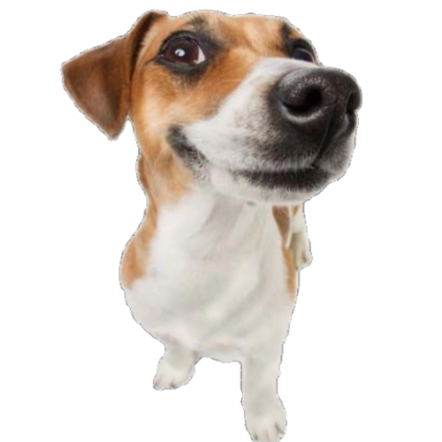

I’m really into photography. I love capturing random moments—there’s something about freezing a second in time that just resonates with me. When I’m not doing that, I’m usually deep into some online FPS games. The competition and fast pace are addictive. And I’ve always had a soft spot for animals, so I take some time to feed stray dogs  whenever I can. It’s kind of my way to give back. And of course, YouTube is my go-to escape—I end up watching everything from tech reviews to the most random stuff.